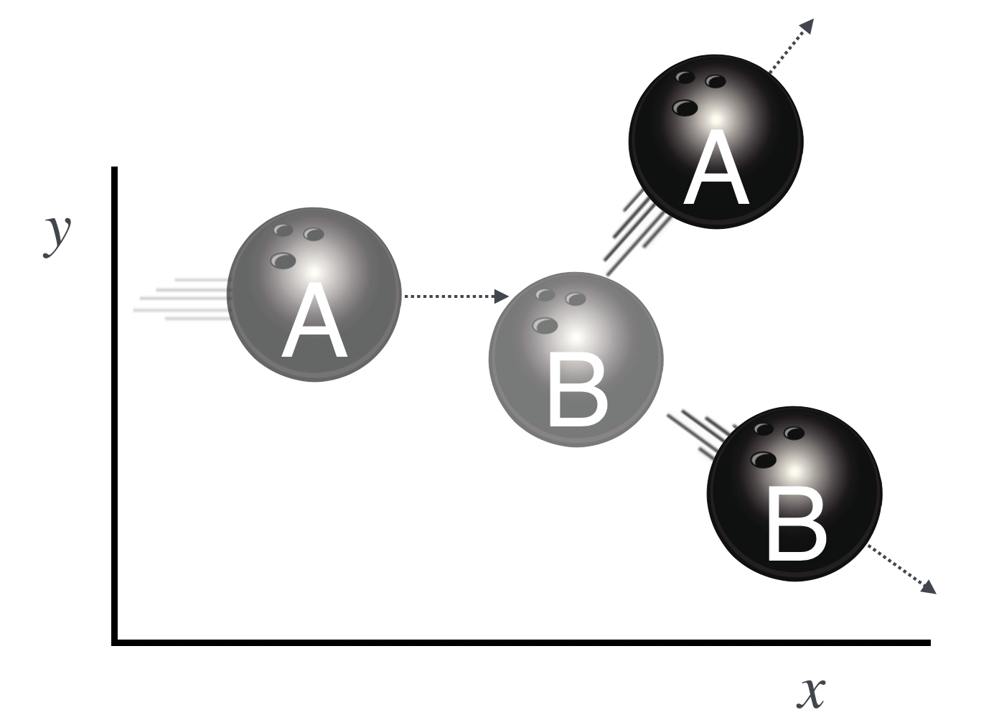
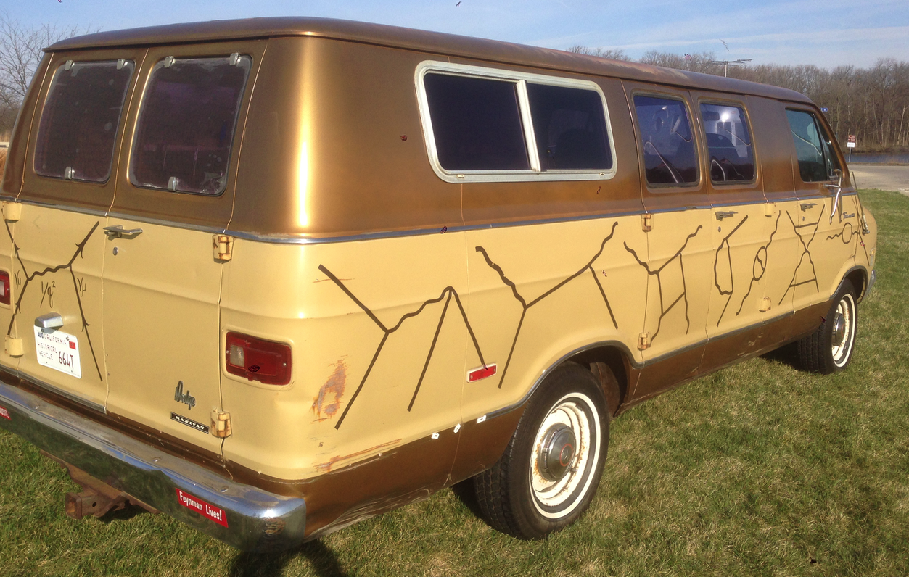
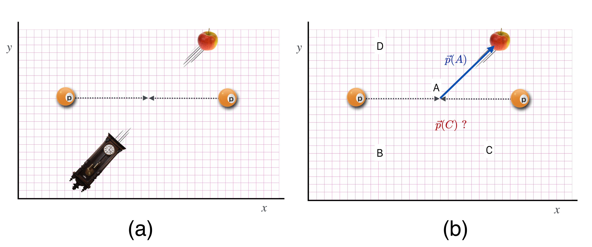
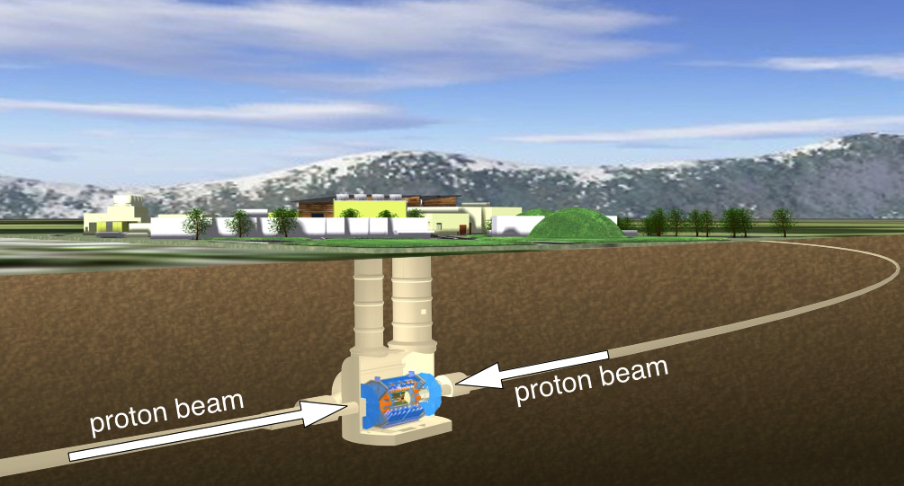
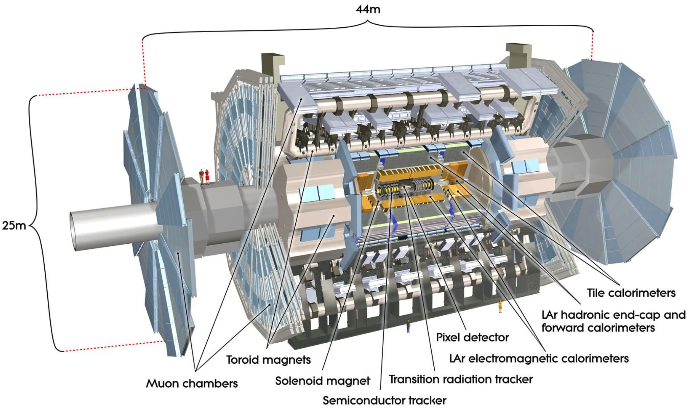
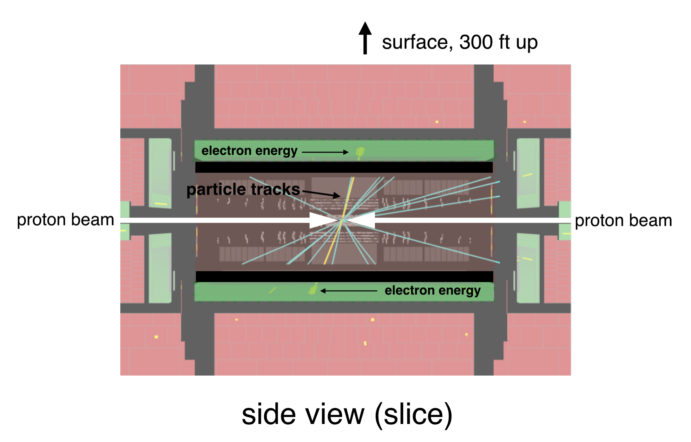
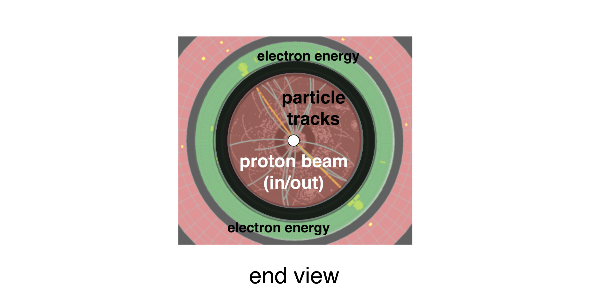
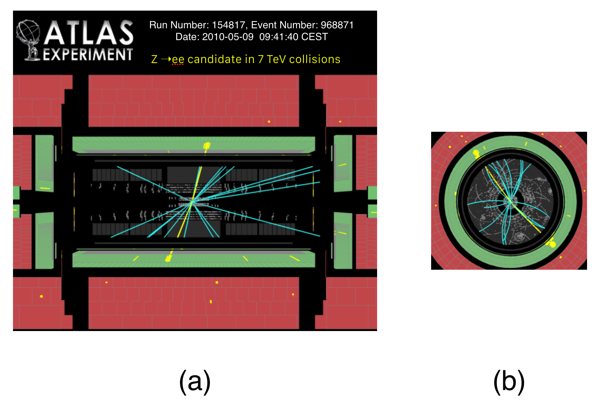
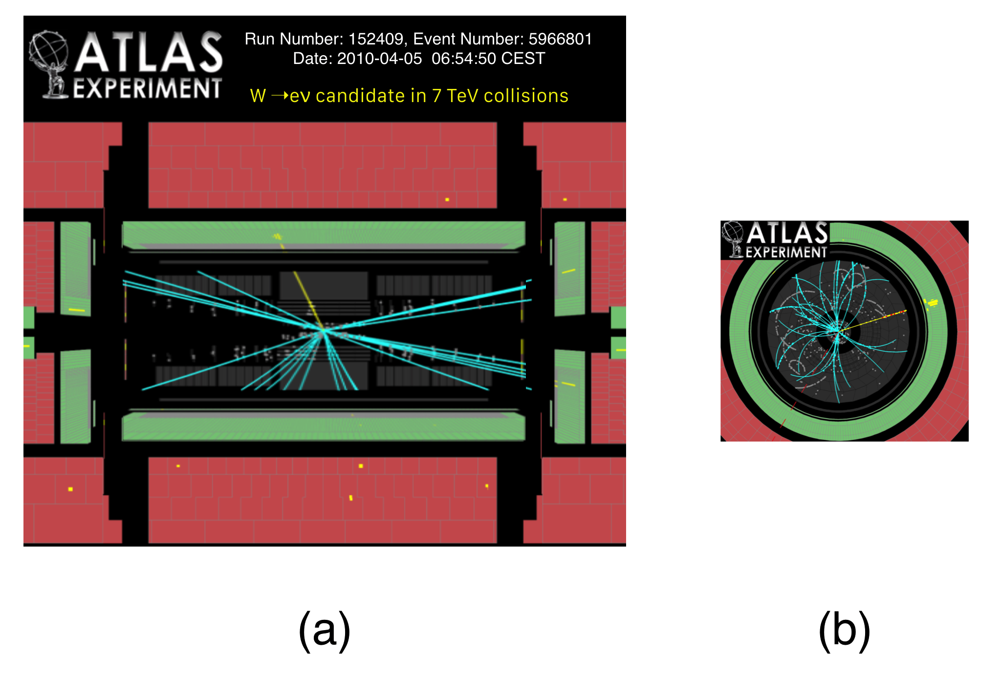

7.9. Two and More Dimensions#
We will not explicitly calculate in more than one dimension, but the sorts of collisions that you’re most familiar with happen in more than one space dimension. Looking down on the pool table? The balls move in \(x\) and \(y\). In Demolition Derby, the cars scatter all over the infield. A pitch that’s precisely horizontal as it passes home plate, is lofted into the air in collision with the bat. We could calculate the consequences of all of these kinds of two and three dimensional collisions, but we won’t. We’ll draw pictures.
In our previous considerations of apples and billiard balls colliding, we assumed that they had no size — point-like. But striking a billiard ball precisely on its center line with a cue ball is tricky. More likely is that they would strike just slightly off-center. In that case, if we define our \(x\) axis along the direction of the beam-ball, the target and the beam will both scatter into the \(y\) direction. Momentum conservation helps to determine the outcome.
The most general statement of the momentum conservation rule is:
This is really a symbolic statement — a mathematical paragraph if you will – not one you can actually do algebra with. Embedded in it are two (or three, if three dimensional space) “real” equations that you can actually separately manipulate to enforce conservation in both. In our situation that vector “paragraph” stands for two equations:
one for the \(x\) direction and another for the \(y\) direction. These can be separately manipulated as regular equations and you can see perhaps that overall momentum conservation means:
Momentum is separately conserved in both the \(x\) direction and \(y\) directions.
Momentum conservation has to hold separately in each of them but we’ll not actually solve the equations themselves. Rather, we can construct two separate Thermometer Diagrams and the transfer the result to the Momentum Diagram. We can draw conclusions without doing any algebra.
Let’s put together a momentum diagram for this situation using our arbitrary units with the following parameters to start with.
Pool balls? That’s for children. We’ll throw bowling balls at one another at twice the optimal speed for sane bowling, about 30 mph.
I’m going to use the language of “beam” and “target” here, as that’s more to our EPP liking. (In our previous collisions, \(A\) would have been the beam and \(B\) would have been the target.) So, now \(A\) will mean beam and \(B\) will mean target. Sorry that “beam” starts with B rather than \(A\).
Here’s the situation.
{kind=link}

Fig. 7.22 Bowling ball \(A\) is thrown at bowling ball B, which is sitting still. \(A\)’s path is slightly off center relative to \(B\)’s position (which is the dashed horizontal line) so it scatters at an angle and also pushes B into an opposite angle. The initial state is slightly transparent relative to the final state.#
Let’s calcualte what happens to the \(A\) ball…without writing any equations:
Please study Example 4:
I hope you followed this! You know all you need to know about momentum conservation as it pertains to particle physics (or high-energy bowling). Look at the (c) picture in the Momentum Space diagram…that looks like a Feynman Diagram and sometimes such sketches can stand in for the more formal Spacetime Diagrams. The context will tell us when to think Spacetime and when to think Momentum.
{kind=link}

Fig. 7.23 We’ll learn a lot about Feynman Diagrams without having to follow his van. Yes. Richard Feynman was like that. The images are individual collision diagrams not unlike what we’re doing here…except billiard and bowling balls had already been done. His tools are for electrons and photons.#
7.9.1. Collisions At the Large Hadron Collider#
Finally, for particle collisions at the LHC two protons are precisely aimed at one another and caused to collide into lots of stuff…some of which might be other protons, but most of which is not.
Wait. Two protons? 10 Billion Euros for two crummy protons?
Glad you asked. Well, not exactly. The LHC proton beams come in about 3000 bunches of protons, one after the other 25 nanoseconds apart, in which each bunch contains about 120,000,000,000 (\(1.2 \times 10^{11}\)) protons. The bunches are about 30 cm long and 0.000016 meters (16 microns—a strand of your hair has a thickness of about 50 microns) across and they’re all traveling at 0.999997828 times the speed of light. Of those bunches, there are about a half-billion collisions per second. So, lots of protons collide at the LHC. We’ll learn about this later. In spite of that kind of collision mess, we can isolate individual proton-proton collisions because our electronics is really, really fast and smart. (We build some of that electronics at Michigan State.)
You now can search for new particles at the LHC. Here is an image of a collision between two protons which, because quantum mechanics is weird, will more likely produce things that are not protons. Even things much, much heavier than protons. (Mr Einstein is in the green room getting ready for his appearance in a few lessons…)

Fig. 7.24 (a) shows the Space Diagram for two protons in the initial state and overlaid is the result: two things that are decidedly not protons in the final state. (b) shows an unfinished Momentum Diagram for that event.#
Suppose we missed the clock. We might find it by knowing what its momentum is. On the right is a measurement in which the momentum of the apple, \(\vec{p}(A)\) is precisely measured ( for this example a pretty unusual detector) and is shown as the blue arrow in (b), now a Momentum Diagram.
What’s the momentum of the clock? Is it a vector from the collision point to A, B, C, or D?
Wait. I suspect it’s B, right?
Glad you asked. Sure. The momentum of the clock has to be back to back to the momentum of the apple if that’s all that is produced in this collision.
Why? Momentum conservation is at work.
Now let’s look at some actual collisions in our experiment at CERN. This cartoon shows a a slice through the Swiss countryside where two beams in a 17 mile circumference proton accelerator collide in the center of our ATLAS[^atlas] detector. The whole operation is 300 feet underground.

Fig. 7.25 The ATLAS detector at the Large Hadron Collider at the intersection of the colliding proton beams.#
It’s useful to think of our particle detectors as concentric circles of instruments centered on the beams and the collision point. Each layer detects the presence of aspects of the particle debris that is produced when these high energy protons collide and convert their energies into matter. Here is a cut-away view of our ATLAS detector. You can see two MSU-sized people standing on the left part of the detector. It’s pretty large.

Fig. 7.26 A cut-away drawing of the ATLAS Detector at CERN. See the two EU-sized people on the left?#
Here is a side view slice of these layers in which the protons come in from opposite directions and are directed to collide in the center.

Fig. 7.27 Side view slice of an event in the ATLAS detector.#
The interior red portion detects just the tracks that particle create—the computer reconstructs them into lines. The green bands (are really cylinders, but are bands in this sliced view) include detector elements that cause any electrons (or photons) to deposit all of their energies. The computer reconstructs that deposition as “blobs” that represent the energy where the electron gave up the ghost. You can see the colored tracks and the yellow blobs of electron energy-deposition.
We can also look at the detector from the end view where the beams go in and come out of your screen.

Fig. 7.28 End slice view of an event in the ATLAS detector.#
Think about the initial and final states of a collision in these monsters. The protons come from opposite directions at the exact same speeds. So, same mass, same speeds, head on—so opposite momentum vectors that cancel perfectly horizontally. Likewise, the beams are perfectly horizontal and so there’s similarly no momentum in the vertical direction in the initial state. What about the momentum components in the final state of all of the particles that are produced?
They must cancel when all added up.
Here are then some real proton collisions from ATLAS. Remember, these are reconstructions of momenta, positions, and energies of particles that a computer (actually, thousands of commodity computer cores) has turned into images for our enjoyment. The actual analysis is done on the raw electronic signals.

Fig. 7.29 This is a computer reconstruction of the consequences of colliding two protons with one another in the ATLAS detector at the Large Hadron Collider at CERN. The (a) is a vertical slice through the detector with up being toward the surface. The two beams of (identical) protons enter from the left and the right and collide in the center. (b) is the end view of that same event.#
A collision has happened and it is one in which two protons collide head-on right in the center—one beam from the right and the other from the left and produce, in this case, two electrons that emerge and leave their traces in our detector as the two blotches of yellow color. You can almost think of the yellow lines and little blobs as the momentum vectors for the outgoing particles from the collision.
In the left hand picture, you seen one electron headed up and to the right and balanced by the other, down and to the left. In the end-view, those same electrons are back to back again, with the projections of their deposition shown to us. This end view is particularly useful since the initial state momentum around the beam is zero, so the momenta of the two electrons each have to be conserved in the horizontal and vertical directions. The amount of color in the “blobs” is a good measure of the magnitude of the momentum in each electron, and again, by eye on the side and the end views you can just about see that they are equal and opposite.
This next figure is a completely different situation! In scientific-speak: count the blobs. There’s only one!

Fig. 7.30 This is another event from the ATLAS detector, but now notice that the final state has only one yellow blob—one electron. (a) shows the side slice and (b) shows the end view.#
Either one of two things is likely the case about this event:
The detector is broken. That sometimes happens, but very, very rarely and we monitor it all the time for dead regions that don’t respond.
Some particle was produced and carries away momentum (so it balances) but it’s a particle that doesn’t interact with the material in the detector so it’s invisible.
I lied. Here’s a third logical possibility: momentum is not conserved in this collision.
Wait. You’re messing with me.
Glad you asked. Well, sort of. But I’m making a point here. A good experimental physicist will always worry about #1. In fact, there’s never been a discovery of something unexpected in which broken or misbehaving measuring equipment wasn’t first blamed. #3 is logically a possibility, but momentum conservation is one of those rules that we’ve learned to trust very well. It’s never let us down. And even when it looked impossible (we’ll encounter that level of frustration later), it’s always recovered. So #3 is not likely at all.
In fact, #2 is the case, at least in this event. It’s our clue that a particularly elusive particle called a neutrino was produced along with the electron, and we would even say, “Look, there’s a neutrino in that event.”
Wait. You mean that you observe this neutrino-particle by…seeing nothing?
Glad you asked. We have to make such discoveries on a statistical basis. We know the rules for producing the “normal physics” that involve neutrinos and if there are other hypothetical particles that are produced, then we’d have to see them behave differently, but only after comparing many, many collisions. A statistically significant anomalous behavior can be a major discovery!
Go to 6.7_2d_v1_w0m for a more in-depth discussion of these issues.
Have you got enough energy to learn about energy?
First, let’s review.